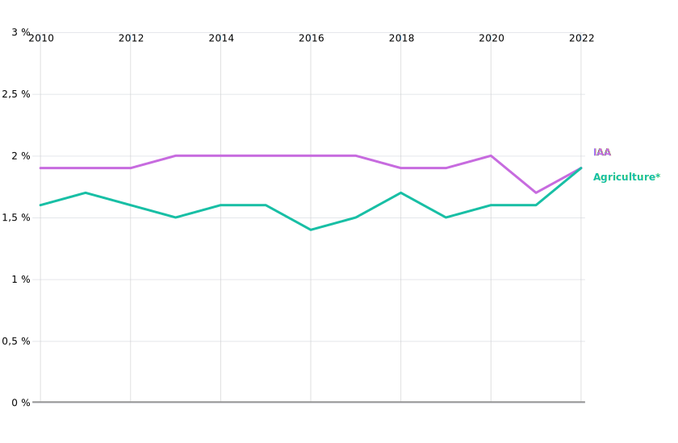

Performances des industries agroalimentaires
Premier producteur agricole de l’Union européenne, la France dispose aussi d’une puissante force de transformation avec ses industries agroalimentaires (IAA). En chiffre d’affaires ou en valeur ajoutée, seule l’Allemagne la dépasse, depuis 2015.
Retourner à l’accueil 
Partager la Viz (Mail) 
Partager la Viz (X)
Partager la Viz (Facebook)
Explorer les données territoriales 
Pendant la navigation, appuyer pour accéder aux autres actions 
Performances économiques des industires agroalimentaires
Premier producteur agricole de l'Union européenne, la France occupe la deuxième place en tant que puissance industrielle agroalimentaire ? Les industries agroalimentaires (IAA) transforment les produits de l’agriculture et de la pêche en aliments et boissons pour la consommation humaine et animale. , en chiffre d'affaire comme en valeur ajoutée. ? La valeur ajoutée correspond au total des ventes (le chiffre d’affaires) diminué des consommations intermédiaires (par exemple le coût des matières premières).
C’est le rang des industries agroalimentaires françaises au sein de l’union européenne.
Classée juste derrière l’Allemagne ces dernières années, la France devance nettement l’Italie et l’Espagne.
Valeur ajoutée des industries agroalimentaires dans l’Union européenne
Prix courants, en milliards d’euros
Source : Eurostat
ℹ️ Télécharger les données
{kind=link}
{kind=link}
Les industries agroalimentaires (IAA) sont le premier secteur manufacturier ? L'industrie manufacturière regroupe les industries de transformation des biens, mais aussi la réparation et l'installation d'équipements industriels. français, en chiffre d'affaires, en valeur ajoutée ou en emploi salarié. ? Rapportées à l’ensemble de l’industrie manufacturière, les IAA comptent pour 16 % des effectifs (ETP), 20 % du chiffre d’affaires et 16 % de la valeur ajoutée en 2021. Elles génèrent par exemple 2,3 fois plus de valeur ajoutée que l’industrie automobile.
Depuis des décennies, les IAA assurent un volume d’emploi salarié remarquablement stable, en croissance même depuis 2015. Cette évolution est plus favorable que celle de l’ensemble de l’industrie manufacturière.
Evolution de l’emploi salarié hors intérim des branches agroalimentaire et manufacturière
Indice en base 100 en 1990
Champ : France hors Mayotte
Source : Insee, comptes nationaux, base 2024
ℹ️ Télécharger les données
{kind=link}
{kind=link}
Les IAA sont un acteur clé d’un vaste ensemble agricole et agroalimentaire
Les IAA forment un maillon essentiel d’une chaîne de valorisation qui va des fermes agricoles jusqu’aux consommateurs (à domicile ou au restaurant), en passant par les commerçants de gros et de détail. IAA et agriculture dégagent en 2022 une valeur ajoutée similaire. Ensemble, elles contribuent pour près de 4 % au produit intérieur brut (PIB) national (à hauteur de 100 milliards d’euros).
Part de la valeur ajoutée de l’agriculture et des IAA dans le PIB
En %

Champ : France
Source : Insee, comptes nationaux, base 2024
ℹ️ Télécharger les données
{kind=link}
{kind=link}
L'analyse sectorielle ? L’approche « sectorielle » privilégie l’activité principale, écartant par exemple les entreprises qui font principalement de la distribution. En comptabilité nationale en revanche, la « branche » IAA couvre uniquement les activités d’IAA, mais dans l’ensemble des entreprises. qui suit distingue l’industrie de l’artisanat commercial. ? L’artisanat commercial regroupe les unités ayant pour activité principale la charcuterie, la boulangerie, la boulangerie-pâtisserie, la pâtisserie, la cuisson de produits de boulangerie. Il concerne pour l’essentiel des entreprises de moins de 10 salariés, par ailleurs inscrites au Répertoire des métiers. Elle écarte aussi les activités de transformation « à la ferme » ? En particulier, certains domaines viticoles vinifient, embouteillent et commercialisent eux-mêmes ; ils ne figurent pas, statistiquement, dans les IAA. , en vente directe, et le commerce de gros.
En 2021, 19 000 entreprises ? Les statisticiens définissent désormais l’entreprise comme la plus petite combinaison d’unités légales formant une unité organisationnelle, avec une certaine autonomie de décision. Il peut s’agir d’entreprises indépendantes ou de groupes comprenant plusieurs filiales. entrent ainsi dans le champ des industries agroalimentaires stricto sensu. De leur côté, les entreprises du commerce de gros ou de l’artisanat commercial alimentaire sont plus nombreuses. Mais elles emploient moins de salariés. Les IAA génèrent deux fois plus de valeur ajoutée qu'artisanat et commerce de gros alimentaires réunis.
Indicateurs du secteur agroalimentaire en France en 2021
ETP : équivalent temps plein
Source : Insee - Esane, traitements SSP
ℹ️ Télécharger les données
{kind=link}
{kind=link}
Pour mieux comprendre une notion comptable comme la valeur ajoutée, supposons qu’une entreprise fabrique des biscuits. La production vendue – le chiffre d’affaires – doit d’abord servir à payer les matières premières et l’énergie, qui font partie des « consommations intermédiaires ». Ce qu’il reste est par définition la valeur ajoutée, soit la richesse créée lors du processus de production.
L’entreprise utilisera cette valeur ajoutée pour payer les salariés, les impôts sur les bénéfices, les frais financiers, amortir son matériel, rémunérer les actionnaires et investir.
Quels résultats en fonction de la taille des entreprises ?
Les industries agroalimentaires reposent pour l’essentiel sur des microentreprises (83 % en 2021). Cependant, les 350 entreprises dites « grandes » ou de taille intermédiaire (ETI) ? La loi de modernisation de l’économie de 2008 définit de nouvelles catégories d’entreprises, à partir de critères multiples et plus du seul effectif salarié. Outre des seuils d’effectifs (10, 50, 250, 5 000 salariés), elle considère l’activité. Par exemple une entreprise de moins de 250 salariés mais dont le CA dépasse 50 M€ et le total de bilan 43 M€ sera classée ETI et non PME. réalisent 85 % du chiffre d’affaires et des exportations et 83 % de la valeur ajoutée ? Les 24 plus grandes entreprises génèrent à elles seules 40 % de la valeur ajoutée des IAA. du secteur.
Indicateurs synthétiques par catégorie d’entreprise en 2021
PME : effectifs < 250 salariés et bilan < 43 M€
ETI : effectifs entre 250 et 5 000 salariés ou CA >= 50 k€ ou bilan entre 43 M€ et 2 000 M€
GE : effectifs >= 5 000 salariés ou (CA > 1,5 Md€ et bilan > 2 Md€)
Champ : IAA hors artisanat commercial et tabac - France
Source : INSEE - Esane, traitements SSP
ℹ️ Télécharger les données
{kind=link}
{kind=link}
Comment se portent les échanges extérieurs des IAA ?
Le taux d’exportation ? Le taux d’exportation mesure la part des exportations dans le chiffre d’affaires total. moyen des industries agroalimentaires s’établit à 25 % en 2021, un taux sensiblement inférieur à la moyenne de l’industrie manufacturière (42 %) : les IAA servent en priorité le marché national.
De gros écarts se dessinent selon les activités.
{kind=link}
{kind=link}
La France est le 6e exportateur mondial de produits agricoles bruts et transformés, derrière les États-Unis, les Pays-Bas, l’Allemagne, le Brésil et la Chine. Les IAA françaises sont, depuis longtemps, exportatrices nettes ? Elles exportent plus qu’elles n’importent. de produits transformés, caractéristiques qu’elles partagent avec leurs homologues espagnoles, italiennes ou néerlandaises. En revanche, si l’Allemagne exporte davantage que la France, elle importe plus qu’elle n’exporte et présente donc une balance commercialeâ ? La balance commerciale représente la différence entre la valeur des exportations et des importations de biens. structurellement déficitaire.
Solde des échanges agroalimentaires français pour différents produits en 2022
En milliards d’euros
{kind=link}
{kind=link}
{kind=link}
{kind=link}
{kind=link}
{kind=link}
{kind=link}
{kind=link}
Comment se déclinent les IAA selon les activités ?
Les industries agroalimentaires recouvrent une dizaine d'activités ? D'une grande diversité, comme par exemple des abattoirs, des caves coopératives viticoles, des petits fabricants de fromage, des usines de production d'huiles, de fabrication d'eaux minérales ou de produits transformés à base de fruits (compotes, jus de fruits)... , de transformation végétale ou animale et de fabrication de boissons.
Quatre activités génèrent les trois quarts de la valeur ajoutée des IAA. Au premier rang : la fabrication de boissons (vin, bière, spiritueux, boissons non alcoolisées hors jus de fruits) avec 22% de l’ensemble.
Valeur ajoutée dans les IAA en 2021
En milliards d’euros
** produits de l’extraction de l’amidon des végétaux utilisés dans l’alimentation (amidon, glucoses, gluten, tapioca…)
Champ : IAA hors artisanat commercial et tabac - France
Source : Insee - Esane, traitements SSP
ℹ️ Télécharger les données
📥 Format CSV 📥 Format SVG 📥 Format PNG
L’activité des boissons domine la valeur ajoutée car elle représente le plus fort taux de valeur ajoutée. C’est celle où les matières premières pèsent le moins dans le processus de production.
L'activité des boissons domine la valeur ajoutée car elle représente le plus fort taux de valeur ajoutée. ? Le taux de valeur ajoutée rapporte la valeur ajoutée du chiffre d'affaire. Moins il y a de consommations intermédiaires, plus il est important. Ce taux mesure la capacité à créer de la valeur supplémentaire. C'est elle où les matières premières pèsent le moins dans le processus de production.
Les activités de transformation de viande emploient le plus de salariés : elles ont besoin de davantage de main-d’oeuvre pour produire.
En matière de chiffre d’affaire, les produits laitiers arrivent en tête, mais leur valeur ajoutée est inférieure à celle des boissons ou des autres produits alimentaires.
Palmarès des activités des IAA en 2021
Source : Insee - Esane, traitements SSP
ℹ️ Télécharger les données
📥 Format CSV 📥 Format SVG 📥 Format PNG
Comparons les boissons avec l’activité qui lui est la plus opposée pour le taux de valeur ajoutée, celle des huiles et graisses.
Dans la fabrication des boissons, les matières premières sont relativement peu coûteuses, en regard de la valorisation du produit final.
Pour produire des huiles et des graisses, ? Fabrication d'huiles et de graisses brutes et raffinées d'origine végétale ou animale (excepté les graisses animales comestibles comme par exemple le saindoux, le suif, ou le beurre). les matières premières pèsent davantage. Plus souvent importées, elles sont aussi davantage sujettes à des variations de prix.
Le calssement suivant traduit le degré de transformation des différentes filières des IAA.
En bas de figure, juste avant les huiles et graisses, la production de farine et d’amylacés (amidon) illustre la notion de première transformation, dont les débouchés peuvent alimenter les filières de seconde transformation, à plus forte valeur ajoutée.
En bas de figure, juste avant les huiles et graisses, la production de farine et d'amylacés (amidon) illustre la notion de première transformation, dont les débouchés peuvent alimenter ? Par exemple, les meunuiseries transforment le blé en farine, et fournissen en matière première les boulangeries-pâtisseries industrielles. Les ateliers de préparations à base de viande produisent aussi pour les industries de plats préparés. les filières de seconde transformation, à plus forte valeur ajoutée.
Taux de valeur ajoutée dans les IAA en 2021
Source : Insee - Esane, traitements SSP
ℹ️ Télécharger les données
📥 Format CSV 📥 Format SVG 📥 Format PNG
Le taux de valeur ajoutée n’est pas à lui seul un indicateur d’efficacité ou de rentabilité économique
Afficher le premier graph.
Pour apprécier la rentabilité, il faut retirer de la valeur ajoutée les frais de personnel.
Apparait ainsi, l’éxcédent brut d’exploitation (EBE) - appelé plus communément la “marge”.
Apparait ainsi, l'éxcédent brut d'exploitation (EBE) - appelé plus communément la "marge" ? La marge sert à payer les impôts, amortir le matériel, couvrir les frais financiers, rémunérer les actionnaires et investir. .
Le “taux de marge†rapporte cette marge à la valeur ajoutée. Moins les frais de personnel pèsent dans la valeur ajoutée, plus ce taux est élevé.
Les activités de fabrication de boissons affichent un taux de marge supérieur à 50 %, cas assez rare dans l’industrie manufacturière.
A l’opposé, les activités de transformation de viande mobilisnet beaucoup de main-d’oeuvre, elles dégagent moins de marge en moyenne.
Taux de marge dans les IAA
Moyenne 2020-2021
Source : Insee - Esane, traitements SSP
ℹ️ Télécharger les données
📥 Format CSV 📥 Format SVG 📥 Format PNG
Comparées à la moyenne de l’industrie manufacturière, les IAA affichent un taux de valeur ajoutée plus faible (20 % contre 26 %) mais un meilleur taux de marge (33 % contre 25 %), et un taux d’investissement â ? plus élevé (19 % contre 15 %).
Marlgré des marges importantes, les secteurs des boissons et des aliments pour animaux sont ceux qui investissent le moins (en proportion de la valeur ajoutée), dans la période 2020-2021.
A l’inverse, les huiles et graissent présentent un taux senssiblement supérieur aux autres activités.
Taux d’investissement dans les IAA
Moyenne 2020-2021
Source : Insee - Esane, traitements SSP
ℹ️ Télécharger les données
📥 Format CSV 📥 Format SVG 📥 Format PNG